...making Linux just a little more fun!
April 2004 (#101):
- The Mailbag
- More 2 Cent Tips!
- The Answer Gang
- News Bytes, by Michael Conry
- Leaning Out of Windows, by Tom Brown
- Help Dex, by Shane Collinge
- Ecol, by Javier Malonda
- Qubism, by Jon "Sir Flakey" Harsem
- The Foolish Things We Do With Our Computers, by Ben Okopnik
- Home Folder Server For Windows Clients, by Avinoam Levkovich
- Simple Joystick control of a servo motor with RTAI/Linux, by Pramode C.E.
- Designing Simple front ends with dialog/Xdialog, by Sunil Thomas Thonikuzhiyil
- The Back Page, by Ben Okopnik
The Mailbag
HELP WANTED : Article Ideas
Submit comments about articles, or articles themselves (after reading our guidelines) to The Editors of Linux Gazette, and technical answers and tips about Linux to The Answer Gang.
 installing mandrake 10.0
installing mandrake 10.0
Wed, 24 Mar 2004 20:58:16 +0000
spb (
t14497867 from netscape.net)
Greetings I installedd disks 1 and 2 linux mandrake 10.0 as an upgrade
to my linux mandrake 9.2, immediately all froze onsgreen . Need an
answer- my 9.2 works ok. thanks.
Wanted point number 1: clearer requests.
-- Heather
[Thomas]
Hi, unfortunately I often have trouble decyphering all that information
that you poured into such a well thought out e-mail. You obviously spent a
lot of time thinking about your problem, listing all the symptoms, etc.
You should give yourself credit for it.
Here's a tip though:
http://linuxgazette.net/tag/ask-the-gang.html
Oh, if you send HTML e-mail to this list again, there's a high chance
you'll get ignored. Seriously we need more information about what id
freezing, whether or not you completed your upgrade, whether or not your
kernel boots....etc.... Otherwise, how can we help you?
Greetings answer gang, I reply to your mail yesterday.
Alas, he still sent text+html email. Wanted point number 2: I can't
use your webmail's HTML folks. Don't waste the bandwidth (about 3x
the space!) sending those extra bits.
-- Heather
The computer using today has Microsft ME os, I cannot send any info to
you from my linux PC, as when I loaded the upgrade mandrake 10.0 on top
of my Mandrake 9.2-( purchased from Mandrake central USA} when after
some time(I thought it had installed 10.0) it returned to the welcome
desktop screen, from there it is completely frozen, the mouse, the arrow
keys , tab key and function keys, so restart many times( by power off
and on only,my only option at the moment} I arrive each time to this
situation, I cannot get to bios settings to change device priority for
startup. to use a boot disk or floppy.
[THomas]
Presumably you managed to boot off of a CD just fine. In that case, I
suggest (no, I urge you) to download knoppix [1] and boot from that. If
you have not the facilities to burn CDs, then find someone who can. Why
exactly can't you access your BIOS?
That's where you come in, dear readers :D
-- Heather
I purchased Mandrake 10.0 from
Linuz.org in USA they sent two cd's by airmail without any other info
except invoice.
[Thomas]
Also, as this is Mandrake, I suggest when you next boot into Linux, you issue:
linux 3
(at the LILO/Grub prompt) so that you're forced into a text-only mode.
Hoipefully you should be able to report back to us whether you can login
or not, and whether your keyboard is still locked, etc.
Please advise a good Linux Tutorial book for home users,
I am not IT boffin thank you .spbramwell.
[Thomas]
The book I used wqas "Running Linux", Matt Walsh, et al. Publsihed by
O'reilly. You'll find it on amazon no problems.
[Heather]
The book I got started with was "Unix as a Second Language" by Sobell,
which has now become several books, for different flavors of UNIX. The
current one of the Linux flavor shows a penguin belly flopping down a
snow bank
 It also got renmaed though ... the name escapes me at this
hour ... Any of the series though, will definitely make your starting
out a little more fun.
It also got renmaed though ... the name escapes me at this
hour ... Any of the series though, will definitely make your starting
out a little more fun.
Readers: more good book suggestions?
More Cool Answers
Wed, 31 Mar 2004 11:35:38 -0800
Heather Stern (
The Answer Gang's Editor Gal)
There's some dark chocolate waiting in the Answer Gang's back lounge for
new folk inclined to send in their good tips or a nice long chat about
how some useful part of Linux really works. You don't have to join the
TAG list either -- just send your bits in to tag@lists.linuxgazette.net.
GENERAL MAIL
My sig, and Linux Gazette... :)
Mon, 8 Mar 2004 02:18:52 -0800 (PST)
Dave Bechtel (
kingneutron from yahoo.com)
Question by carla (carla from bratgrrl.com)
re: http://linuxgazette.net/100/lg_mail.html
Glad you liked my .sig.
I have fond feelings for the original Muppets,
including the Sesame Street ones. Even have some mpeg's of them, such as two
aliens and a hippie singing "Manomonot" on the Muppet Show, as well as the
Intro to the Fraggle Rock show -- in Swedish (I think - it's called
"Fragglarna".)
IIRC, I saw a similar 1337 .sig on Slashdot or somewhere a few years ago,
and adapted it for the Muppets. I got a real charge out of seeing it posted
in LG.Net (twice now, no less!) and the response it generated. LOL.
(You have my permission to publish this letter or share with LG.Net colleagues
if you see fit.)
Best wishes. (And LG, please tell Thomas Adam I'm sorry for being so short
with him. I was going through a bad time, and ended up having to move in
order to get away from the situation.)
Linux, making Sesame Street more fun...
-- Heather
[cc] Looking for Stephen Bint
Thu, 1 Apr 2004 00:20:47 -0500
Ben Okopnik (
LG Technical Editor)
Question by Heather (star from starshine.org)
Hello Heather,
Hi, Gianfranco -
I'm not Heather, but I'm the fellow who receives mail at the editor@
address these days.
I lost contact to Stephen Bint who used
to be a member in the Answer Gang. Messages
to him are bouncing.
Please be so kind and let him know
that he should get in touch with me.
Thank you very much.
--
gianfranco accardo
gfa2c gmx.net
Stephen Bint was never a member of The Answer Gang; he wrote a couple of
articles for LG. I'm afraid we have no way to contact him beyond his
email, and given his own statement of his lifestyle:
Stephen is a homeless Englishman who lives in a tent in the woods. He eats out
of bins and smokes cigarette butts he finds on the road. Though he once worked
for a short time as a C programmer, he prefers to describe himself as a "keen
amateur".
- losing track of him is not an unlikely occurence. I'll CC Heather on
this, but I doubt that she'll be able to help you any more than I could.
Presuming that he occasionally sneaks into a cybercafe to read LG and
write an article now and then, we'll pub the request in the Gazette and
see if he responds. To which end, I've left gianfranco's address
visible. I apologize in advance if the spambeasts find it too.
 -- Heather
-- Heather
GAZETTE MATTERS
Back issues of lg as pdbs
Mon, 1 Mar 2004 11:56:12 -0000 (GMT)
Alan Pope (
alan from popey.com)
Hi all,
I spoke with Thomas on IRC last night about this but it was late and I'm
not sure I made myself clear.
I'd like to be able to read the lg on my palm device. Now I know I can
click the TWDT link on the front page of the site, whereupon some magic
cgi-bin foo generates a pdb file for me to download. I guess this is
taking the text version of TWDT and generating the pdb on the fly?
My question is this. That process is fine and dandy for the current
release, but I'd like to read older issues on my palm. Can the pdbs be
made available on the ftp site?
[Sluggo]
linuxgazette.net doesn't have an FTP site. It now uses a portion of
the website for tarball downloads.
The biggest issue with putting Palm-format files in that directory is
they will be picked up by the mirrors. We'd have to check with the
mirrors whether the bandwidth/size would be a hardship. We also look
at how widely used the files would be. The tarballs can be used on any
platforms with any OS. Palm files work only with certain brands of
palmtops and exclude everything else.
[Thomas]
Hence I agree that generating them on-the-fly (talking of that,
congratulations, Ben!!) is a far better thing to do.
[Ben]
Actually, AFAIK, the Palm Reader is available for several different
platforms; certainly for Wind0ws, WinCE and both of the Linux distros
made for the iPaq. However, I agree that we shouldn't clutter our
tarballs with these things; that was the point of doing this stuff "on
the fly" for the folks who want it.
I could convert the files myself I suppose which would probably involve
lynxing the TWDT text version of the file and then using "some tool" to
generate the pdb from the .txt file. However I just wondered if as that
particular wheel has already been invented, it might save some work?
Cheers,
Al.
[Ben]
Nope, there's nothing set up. I'd suggest grabbing "bibelot" from
Freshmeat and converting whichever TWDT you'd like. Here's the simplest
way I can think of:
lynx -dump -nolist http://linuxgazette.net/issueXX/TWDT.html|bibelot -f -t twdtXX.pdb
where XX is the number of the issue. If you wanted to do a bunch of them
in one shot, you could even do a "for" loop:
for n in `seq $first $last`; do ... done
where $first and $last would delimit the range of issues that you want to convert.
Sure, and I wasn't suggesting that you should add pdb to the tarball or
the ftp server, just asking if the process is already there to generate
pdbs, why not make it available for back issues too?
Hence me saying why reinvent the wheel.
I don't have a problem downloading the TWDTs and converting them, just
thought it would be easier to use whats already there.
Cheers,
Al.
This page edited and maintained by the Editors of Linux Gazette
HTML script maintained by Heather Stern of Starshine Technical Services, http://www.starshine.org/
Published in Issue 101 of Linux Gazette, April 2004
More 2 Cent Tips!
See also: The Answer Gang's
Knowledge Base
and the LG
Search Engine
 Pushing Files To Multiple Hosts
Pushing Files To Multiple Hosts
Sun, 07 Mar 2004 20:46:45 -0500
Sean Johnson (
sean from gutenpress.org)
While it might be overkill for your situation, this is a perfect place
to use cfengine ( http://www.cfengine.org ).
Perhaps I should write up an article for Linux Gazette?
Cheers,
Sean
[Thomas]
You're more than welcome to do so. Author submission guidelines can be
found in the FAQ, found here:
http://linuxgazette.net/faq/author.html
Connecting Mac OS9/10 to a Linux Samba Domain
Thu, 05 Feb 2004 12:22:12 +0300
Thomas Adam, Breen Mullins (
The LG Answer Gang)
Question by JG Nasser Olwero (jgnasser from mpala.org)
I run Samba 2.2.3a on RH Linux 7.3 as the Domain Controller. I have all
my Windows clients connecting fine to it but have trouble with Mac
clients, no idea how to log them on. I also attempted to have the Mac
client connect to the Linux POP3 and SMTP server (Sendmail) to no avail
probably because the Mac is not welcome on the network. I am connecting
the Mac using wired ethernet to a Network switch.
[Thomas]
You need to ensure that you're using the 'appletalk' protocol. This has to
be enabled in the kernel. There are also userspace programs that are
needed for this.
http://ftp.linux.org.uk/pub/linux/appletalk
might be of interest.
Hope That Helps
[Breen]
You don't use AppleTalk to connect to a POP or SMTP server. That's pure
TCP/IP.
If we're talking about a Mac OS X client, that comes with Windows
filesharing built in. Classic Mac OS is of course a different problem.
Actually, MacOS X knows how to speak Samba/mswin sharing now too; their
client side tool is called DAVE, and it used to be third party software
for MacOS 9. If you want to install Mac style sharing on your Linux
box, the app you're looking for is called netatalk. I used it years ago
and it was a breeze to setup - had 'em working faster than their mswin
cousins in the same office.
-- Heather
[Breen]
If you're using OS X you can call up a connect dialog with Cmd-K and
enter the address smb://<ip_of_server>. You'll need an IP address, of course
-- check your network preferences pane to make sure.
Beyond that, you're probably looking at a Mac client issue. You might
try asking for help at a Mac specific site. (I recommend
http://forums.macosxhints.com, if you're using X.)
CDROM not seen by RH9
Thu, 11 Mar 2004 16:29:46 -0500
Thomas Adam (
The LG Weekend Mechanic)
Question by Joseph Lalingo (ah300 from torfree.net)
Hi,
I installed RedHat Linux 9 via the cd-rw, successfully, but the cdrom
was not seen. I know the cdrom is still connected internally as I
haven't interfered with the system's insides (which came with a a cdrom
and cd-rw) internally. The cd-rw is understood to be the cdrom and there
is now NO /mnt/cdrom1 but there IS a /mnt/cdrom.
The cdrom door does not open, yet the light of the cdrom is on.
Joe
[Thomas]
"The lights are on but there's no one home". /mnt/cdrom is the mount-point
location of your cdrom drive. It is arbitrary and you can use anything you
like. These are defined (or should be) in /etc/fstab.
If you look in that file, you should have a line similar to:
/dev/cdrom /cdrom iso9660 ro,user,noauto 0 0
Here, /dev/cdrom is in turn a symlink that points to my main cdrom device:
/dev/hdd. This then gets mounted to /cdrom, when I issue the command:
mount /cdrom
I suspect your troubles come from you missing an entry in /etc/fstab. If
you wanted to mount the second drive as /mnt/cdrom1, then look at the
existing line in the /etc/fstab file, and modify it to reflect the new
drive.
The device name (/dev/xxx) can be got from viewing:
dmesg | less
In Short, Dig This
Wed, 31 Mar 2004 01:45:38 -0800
Jim Dennis (
the LG Answer Guy)
Possibly there's not a sysadmin around who hasn't needed to do a host
lookup now and then, to make sure they know what addresses are really
being found when a DNS lookup is made.
nslookup is deprecated, host can be confusing, dig is the nice tool for
the job - regardless of attempts to claim it is old too, it will be
around a long time. But who really wants to get a long listing full of
semicolon comments and things?
; <<>> DiG 9.2.3rc4 <<>> linuxgazette.net
;; global options: printcmd
;; Got answer:
;; ->>HEADER<<- opcode: QUERY, status: NOERROR, id: 605
;; flags: qr rd ra; QUERY: 1, ANSWER: 1, AUTHORITY: 2, ADDITIONAL: 2
;; QUESTION SECTION:
;linuxgazette.net. IN A
;; ANSWER SECTION:
linuxgazette.net. 86400 IN A 64.246.26.120
;; AUTHORITY SECTION:
linuxgazette.net. 86400 IN NS ns1.linuxmafia.com.
linuxgazette.net. 86400 IN NS ns1.genetikayos.com.
;; ADDITIONAL SECTION:
ns1.linuxmafia.com. 61864 IN A 198.144.195.186
ns1.genetikayos.com. 61864 IN A 64.246.26.120
;; Query time: 153 msec
;; SERVER: 216.240.40.162#53(216.240.40.162)
;; WHEN: Wed Mar 31 01:39:18 2004
;; MSG SIZE rcvd: 144
Unless I'm tracking the path of authority rather than just checking the
address, I don't care either.
(jimd@phobos) ~$ dig +short a linuxgazette.net
64.246.26.120
Short, sweet, and to the point. Replace "a" with "mx" or "ns" as you
please, but this is a lot handier for scripting; I don't have to
invoke my talent for awk and grep one-liners on DNS checks anymore.
DNS proxy/cache (Tip)
Tue, 16 Mar 2004 00:11:33 +0100
Karl-Heinz Herrmann (
kh1dump from khherrmann.de)
Hi,
I had an annoying little problem: My home network has grown to 3 PC's --
one directly on the phone line, the others connected via WLAN. Usually I
would pick one dial-up provider and stick with that. Unfortunately the
German ISP's are a big mess of call-by call providers with constantly
changing tarifs.
The directly connected box is only the dial-in and firewall/NAT Router,
the other two are my Laptop and desktop.
The annoying problem: Everytime I change the provider I had to change
the resolv.conf on all systems according to the new nameservers as
transmitted via [i]ppp protocol.
-
My solution: dproxy
- http://dproxy.sourceforge.net
It serves as a proxy/cache for DNS lookups. It uses regular sys-calls
for namelookups and reacts instantly (no kill -HUP or similar) to new
entries in /etc/resolv.conf. This is on the router of course and
everytime pppd changes the resolv.conf for the new provider it simply
uses the new values.
The other two machines have the router as the nameserver and always get
the correct information (even offline, so a connection is of course not
possible). No manual changing anymore.
K.-H.
Making filenames lowercase
Wed, 31 Mar 2004 10:05:38 -0500
Ben Okopnik (
LG Technical Editor)
Sometimes, despite our best eforts with "unzip -L", we end up with a
bunch of files the names of which are ALL IN CAPS. The easy way to deal
with these is with a simple utility that I call "lc". (Also, should you
ever need such a thing, creating a complementary "uc" would be an
obvious modification.)
#!/usr/bin/perl -w
# Created by Ben Okopnik on Fri Jul 25 09:13:22 EDT 2003
die "Usage: ", $0 =~ /([^\/]+)$/, " <FILE[S]_TO_LOWERCASE>\n" unless @ARGV;
rename $_, lc for @ARGV
Note that you can specify multiple files or even shell wildcards at the
command line; it's perfectly happy to chew on whatever you supply.
measuring the temperature in your computer room
Wed, 17 Mar 2004 13:12:23 -0800
Yan-Fa Li (
yanfali from best.com)
Hi,
I've found a useful side effect of running smartd on my drives at home
which I've used for a while now
to monitor the temperature in my apartment. A lot of newer IDE drives,
especially IBM/Hitachi's and SCSI
hard disks monitor the drive temperature. I've found this to be a
useful way to figure out how hot it is
in my computer room at home :D
Assuming you've already installed smartmontools, this was tested with
version 5.26:
# smartctl -a /dev/hda | grep 194
194 Temperature_Celsius 0x0002 161 161 000 Old_age
Always - 34 (Lifetime Min/Max 20/37)
As you can see the drive is a toasty 34 degrees celsius. Of about 5-7
degrees above ambient, it's about 27-29C
or 80-85F in that room right now. Not great for the equipment but
survivable. Anyway, not terribly useful,
but interesting nonetheless :D
Yan
Troubleshooting mail delivery
Thu, 1 Apr 2004 22:33:59 -0500
Ben Okopnik (
LG Technical Editor)
There are times when the mail just won't go through, for any of a host
of reasons. Your ISP's server may be down, your own mail programs don't
work, whatever - and of course, this happens at the most critical times,
"when it absolutely, positively has to be there." Well, assuming that
your recipient's mail server is working, you can bypass most of the
chain - at least your end of it. This can also be a good testing tool.
It lacks a few refinements (e.g., there's no subject and the address you
supply is actually used as the normally hidden "From" header rather than
the friendlier and visible "From:"), but it will at least get the
content across.
ben@Fenrir:~/Docs$ telnet badabing.com 25
Trying badabing.com...
Connected to badabing.com.
Escape character is '^]'.
220 badabing.com ESMTP Postfix (Debian/GNU)
HELO myserver.net
250 badabing.com
MAIL FROM: me@myserver.net
250 Ok
RCPT TO: joe@badabing.com
250 Ok
DATA
354 End data with <CR><LF>.<CR><LF>
Hi, Joe - it's me!
.
250 Ok: queued as D1F8F160B4
QUIT
To recap - I connected to port 25 (SMTP) at badabing.com, identified my
server via HELO ("hello"), to which the server responded with its own
name. I then told it who the MAIL was FROM: and who the recipient (RCPT)
is supposed to be, and asked it to stand by for the actual DATA, which
it told me to end with a return, a period, and a return. When I was
done, I typed "QUIT" to exit.
This is not for everyday use, but can be a very handy tool for those
times when you've just got to get your mail across despite problems.
vmlinuz from when and where?
Wed, 31 Mar 2004 01:45:38 -0800
Heather Stern (
The Answer Gang's Editor Gal)
In my consulting I find myself running into an awful lot of systems
booting off of 'vmlinuz' in the root directory. What kernel is that?
How the heck would I know?
I'll tell you how I ask it :D
[root@somebox] /# strings vmlinuz | grep 200
2.6.0-test7-1-386 (herbert@gondolin) #1 Sun Oct 12 10:29:56 EST 2003
Why does this work? Because now that we're a few years into the
century, nearly all the kernels contain something with a year 2000 or
later, and we'll have 200n year numbers for a while yet. On an older
system, try 199 - Linux isn't old enough to have kernels from 1980
unless someone is playing serious games with their clock. You could
probably look for the @ sign, but chances are too good of finding one
alone somewhere in the binary portion of the code.
This page edited and maintained by the Editors of Linux Gazette
HTML script maintained by Heather Stern of Starshine Technical Services, http://www.starshine.org/
Published in Issue 101 of Linux Gazette, April 2004
The Answer Gang
 The Answer Gang
The Answer Gang

By Jim Dennis, Ben Okopnik, Dan Wilder, Breen, Chris, and...
(meet the Gang) ...
the Editors of Linux Gazette...
and You!
We have guidelines for asking and answering questions. Linux questions only, please.
We make no guarantees about answers, but you can be anonymous on request.
See also: The Answer Gang's
Knowledge Base
and the LG
Search Engine
Contents:
- ¶: Greetings From Heather Stern
 Compile on one, run on another machine
Compile on one, run on another machine
- Dedicated Linux application
- Diagnosing a Linux crash
- I blew out Fedora with yum and 2.62
- 2c tip: filtering in-place
- framebuffer colors
- Mirror 2 web servers
 Greetings from Heather Stern
Greetings from Heather Stern
Greetings, folks, and welcome to the world of The Answer Gang. It's
been a rough and tumble time here... I've got some hardware in a
shambles. It's just not my week. Just looking at all these scattered
parts makes me wonder if I could build a robot out of them. I've got
enough backups I've certainly my pick of linux flavors...
Then some folks in an IRC channel got into discussing what sort of
mayhem we would see if various window managers were thrown into a
gladiatorial arena and forced to duke it out, mano a mano, claw
to saw. "Fight! Fight!" cried our Weekend Mechanic -- as he cheerfully
added parts to the house favorite --
and the battle was on.
WM-bot Wars
In our first round of the competition, we have the little guys. Heck,
you might have even heard of some of them. Aren't they so cute!
Minimal is the name of the game here. Let's weigh in, the advantage is
they're light, the disads are what features they left out - the
underpower crowd roars for these underdogs - here you have 'em
folks:
- Ratpoison - throw
that mouse away, kids.... and also menus.
- aewm -
aesthetic? Maybe. But its place in the very brief
limelight has been taken by its many children.
- sWM
- a failsafe, just enough to manage windows - meaning where the events
go, and moving them - forget everything else.
- windowlab. You
Amiga fans out there might like this one. Slam that mouse around. Zip
across the screen. Whee!
The fight begins, with these and crowds of other small fry swarming to the
freshmeat.
Amaterus
makes a pretty good start but it has a menu - just a sucky
one. Someone hops a pogo stick and virtual desktops sprout.
Apps being executed everywhere. A pypanel confers, Oroborus nearly trapped against the
obscurity wall when MacOSX
rescues it. And the first round goes to the happy Blackbox family, including
hacked, open, and flux box for creative menu
tricks ranking recently
used apps.
The bell rings and we clear out a few smoking ruins - now for the
midsize mayhem.
WindowMaker wades in - or
is that widowmaker - docks his jaws around AfterStep. Tiny Tom's wm escapes the
system spikes, but Claude has the
extra edge. IceWM is looking cool
until he hits the arena's flame trap "I wanna look like..." but won't
fall for that - escapes the pit! Menus click, swap thrashes, and catlike
fvwm takes control of the mouse,
scripting rings around the others.
Now for a page from the masters. We know those flames are tough,
and it's time to let the survivors here get a chance to commit before
the next round... the big noisy battle of them all... Desktops.
Gnome and KDE both extend their
hints against the competition, crushing smaller opponents. Enlightenment upgrades to 16.6 and
stands its ground. FVWM laughs and sprouts modules to extend itself, while
fast light wm joins it in
pushing the brutes into the arena's OOM killer. Parts are
flying everywhere! Chipping through the armor, flames are getting through
... ooh! FVWM escapes by shedding its modules again, while K is trapped.
Something's bound to overload... K's gears
grind slowly to a halt, while Gnome has the metacity to pick
on E's incomplete brother which valiantly struggles to code up new features
before timeout. XFce zooms
into the fray - "wanna piece of me?" Then the commercial desktops enter
the fray, xig's CDE-like DeXtop rushing forward
only to wedge in the pit of interoperability. Athene constantly regenerates
but when the battle gets toe to toe, the obscurity spikes pin it down, the
theme of the day turns Fvwm's way -- and it looks
like we've a champion.
But what's this? The arena has been invaded. Who are these interlopers?
screen has taken to the
field, with twin
nipping at its heels. A growl from behind, but they squish splitvt
together, dtach another tiny
opponent, then turn back to each other -- only to wail
as emacs turns its
Gnu-like
head in their direction, establishing a sessions server...
Is it possible for there to be any more carnage than this? Probably.
Seen on alt.sysadmin.recovery:
I am now taking bets on when this planet will reach its window manager
event horizon. At some distant point in the future some sort of
alien life-form is going to land on this planet and find everything dead
except for a lone Sparcstation in an abandoned building waiting
for a consignment of small lemon-soaked Motif widgets to be loaded.
-- Peter Gutmann
Ok, ok. That was overkill. I'm sorry, really sorry that I had to pub
late this month, but as you can see now, my place is a shambles. But I
did find something cool while finishing up... hooray! Someone in Ireland
actually *CAUGHT* a spammer. Better yet, got them
hauled
away by the cops. (Alleged, hah. Caught with everything but a
patsy present in person and teary-eyed.) Not even April fooling. Enjoy
your month, folks. I know I will.
![[NOTE]](../gx/2002/note.png) So that's it. Answers
by Jim Dennis, Ben Okopnik, Thomas, Faber, many others among The Answer
Gang... and you! If you've got some great Linux answers - send them to us. Ideally the
answers explain why things work in a friendly manner and with some
enthusiasm, thus Making Linux Just A Little More Fun! Good short
bits will probably go in Two Cent Tips, but truly juicy explanations,
especially those that get the Gang jumping in, could end up here. We don't
promise that we'll publish everything, though. Also - you can be
anonymous, either asking or answering - just tell us so, and Tux will eat
the herring we wrote your name on. We swear.
So that's it. Answers
by Jim Dennis, Ben Okopnik, Thomas, Faber, many others among The Answer
Gang... and you! If you've got some great Linux answers - send them to us. Ideally the
answers explain why things work in a friendly manner and with some
enthusiasm, thus Making Linux Just A Little More Fun! Good short
bits will probably go in Two Cent Tips, but truly juicy explanations,
especially those that get the Gang jumping in, could end up here. We don't
promise that we'll publish everything, though. Also - you can be
anonymous, either asking or answering - just tell us so, and Tux will eat
the herring we wrote your name on. We swear.
Published in Issue 101 of Linux Gazette, April 2004
News Bytes
By Michael Conry

|
Contents:
|
Selected and formatted by Michael Conry
Submitters, send your News Bytes items in
PLAIN TEXT
format. Other formats may be rejected without reading. You have been
warned! A one- or two-paragraph summary plus URL gets you a better
announcement than an entire press release. Submit items to
bytes@lists.linuxgazette.net
Legislation and More Legislation
 EU IP Enforcement
EU IP Enforcement
The EFF has reported on a recent vote in the European Parliament, adopting the Directive on Intellectual Property Enforcement. This gives rights holders new tools with which to attack intellectual property infringers. The proposals make little distinction between unintentional, non-commercial infringement by consumers, as opposed to the for-profit quasi-industrial infringement practised by professional pirates.
European Microsoft Case
As reported by The Register The European Commission has found that Microsoft has abused its position as a monopoly in the market. The findings centered on Microsoft's use of its dominant position in the OS sector to acquire market share in associated products (e.g. media player).
The remedies imposed include requiring the disclosure of interface documentation to allow non-Microsoft work group servers to inter-operate with Windows systems. This information must be updated as products change, and Microsoft will be entitled to remuneration "To the extent that any of this interface information might be protected by intellectual property in the European Economic Area". Microsoft will also have to offer to PC manufacturers a version of Windows without Windows Media Player. A fine was also imposed.
Though some, such as Sun Microsystems, have strongly welcomed the ruling, others are more sceptical about its potential to change matters. Indeed, the licensing of APIs may offer a welcome new revenue stream to the Redmond company.
Linux Links
Concerns about European patents
LinuxDevices.com's Embedded Linux Market Survey
How Not To sell Linux Products
LXer (pronounced Elexer) is a newish (January) Linux news site. Well worth a look.
Simputer uses Linux
Linux in the living room
8 rules for open-source business strategy
Video production with Linux
creating PDF files with ps2pdf
A look at the state of Linux on PS2
Linux 2.6 at illuminata
Macromedia to offer Linux support on a trial basis
Hiring Open Source Developers
Linux Warcry asks what are the alternatives to XFree86 while The Age has a useful report on the licence issues between Apache, XFree86 and FSF
Wireless Linux
CEOs say Open Source keeps IT spending down and and saves money
Comic-book publisher turned IT-company aims to bring Linux and new hardware platforms to China at large
Ian Murdock on the future shape of Linux distributions
Linux distributions around the world
Hyper-threading and Linux
SCO goes quiet in Germany following an out of court settlement with Univention. Effectively, they seem to be prevented from publicly expressing most of the statements behind their case.
Copyright law stifling art with DJ Danger Mouse's Grey Album
Networking improvements in the 2.6 Kernel
Introduction to the Gumstix, a tiny Linux computer
Creating UNIX screen-capture movies
Migrating to 2.6
Cold war between open and closed source camps
Comparison of Linux 2.6.4 vs 2.4.25 while NewsForge asks is the 2.6 kernel ready for general distribution?
News in General
GNOME
The GNOME Project had the misfortune to experience an intrusion on the server hosting www.gnome.org and some related gnome.org websites. However, it is unlikely that sources were tampered with, and by all accounts this was a minor intrusion.
Apache
The Apache Software Foundation, and The Apache HTTP Server Project have announced the release of version 2.0.49 of the Apache HTTP Server. As well as fixing three security vulnerabilities, this new release also includes numerous enhancements and new features.
OpenOffice.org
OpenOffice.org
has released a new version of the popular office productivity suite: OpenOffice.org 1.1.1. This is primarily a bug-fix release though it does include a few new features as well.
The Gimp
The Free image manipulation and graphics tool the Gimp has reached version 2.0. This is a major release, and marks the advent of official support for the software on MS Windows and Mac OS X, as well as the traditional Unix-based operating systems. As well as the official press release you may be interested to read the descriptions of the new features included in this release. The software can be downloaded now from various mirror sites.
Distro News
Debian
Debian votes to keep non-free.
The Debian package Popularity Contest aims to help order the applications that will be included on the estimated 13 binary CDs sarge will ship on when released. Participation is simply a matter of installing the popularity contest package.
Gentoo
The O'Reilly Linux devcenter has published an account by Danny O'Brien of a talk given by Daniel Robbins, Gentoo's chief architect. Also of interest is the review of Gentoo at LXer.
Mandrake
Mandrake has relisted on the stock market after filing a plan for the repayment over the next nine years of its outstanding debts.
Mandrake has also released a new revision of their operating system Mandrake 10.0 Community, which features the new 2.6 kernel.
UserLinux
Bruce Perens on UserLinux
Software and Product News
GFI
GFI has announced that it is developing a Linux version of its GFI MailSecurity product, and that it will be adding support for Linux-oriented features in all its products. Previously, GFI MailSecurity was available for Microsoft Windows.
Linux Pocket Guide
O'Reilly has launched a new Linux reference book. The new "Linux Pocket Guide" by Daniel Barrett aims to be a useful reference for new and experienced Linux users who need a quick and handy means to look up Linux commands.
Mick is LG's News Bytes Editor.
![[Picture]](../gx/2002/tagbio/conry.jpg) Originally hailing from Ireland, Michael is currently living in Baden,
Switzerland. There he works with ABB Corporate Research as a
Marie-Curie fellow, developing software for the simulation and design
of electrical power-systems equipment.
Originally hailing from Ireland, Michael is currently living in Baden,
Switzerland. There he works with ABB Corporate Research as a
Marie-Curie fellow, developing software for the simulation and design
of electrical power-systems equipment.
Before this, Michael worked as a lecturer in the Department of
Mechanical Engineering, University College Dublin; the same
institution that awarded him his PhD. The topic of this PhD research
was the use of Lamb waves in nondestructive testing. GNU/Linux has
been very useful in his past work, and Michael has a strong interest
in applying free software solutions to other problems in engineering.
Copyright © 2004, Michael Conry. Released under the
Open Publication license
unless otherwise noted in the body of the article. Linux Gazette is not
produced, sponsored, or endorsed by its prior host, SSC, Inc.
Published in Issue 101 of Linux Gazette, April 2004
Leaning Out of Windows
By Tom Brown
This is a follow-up to my earlier article, "I Don't Think We're in Redmond Anymore, Toto" (Issue #97, December 2003), in which I described my introduction to, and first impressions of, Linux. In this article, I wanted to give you my further impressions and experiences, so you have some idea what it's been like to go full-time (more or less) from Windows to Linux. In the process, I hope to pass on some helpful tips. Hopefully, you who follow in my footsteps can avoid stepping in some of the doggy-doo that I faced (faced? now there's a mental picture I could have done without).
Choosing a Linux Distro
The first thing you need to do after deciding to give Linux a try is choose a distro. There are a lot of them out there, with different features and benefits to each one. I myself started out with Mandrake, and was happy with it until I raised my computer's memory to 1GB, at which point the default version of Mandrake refused to run. Unwilling to play around with it, I changed over to Red Hat 8 (and subsequently upgraded to Red Hat 9). My main reason for choosing Red Hat was the large number of companies that used it. In time, I'd like to make a living using Linux, so it seemed like a natural choice. In my opinion, RHL9 wasn't as easy to use as Mandrake, but it worked well enough.
One day, I received the "end of life" email from Red Hat, which gave me the choice of upgrading to their Enterprise version, Red Hat Enterprise Linux, or switching to the "hobbyist" version, Fedora Core (I refuse to call it "Fedora", since that name has been in use since 1998 by Cornell University and the University of Virginia for a different project). Suddenly, I was back to choosing a Linux distro again. The one choice from Red Hat was too expensive, and the other looked like a permanent beta version to me (sorry guys, I know some of you disagree). I decided to look at other distros, and finally settled on SuSE 9 Professional.
In the course of this article, I'll mention some of the features in SuSE that attracted me to it, and which have made my life easier. Everyone has their favorite distro, of course, so before you jump into the Linux universe, talk to others about which distro they're using and why. Even if you're just playing around with Linux, you'll be a lot happier if you do your homework first.
Installation
Most Linux distributions are simple and straightforward to install (some don't even need installing, but run right from the CD). As long as the distro's new enough to recognize your equipment (or your equipment is old enough), installation's a snap.
At this point in your exploration of Linux, your biggest problem is going to be hardware support. I already mentioned that Mandrake didn't support my 1GB of memory. Neither Mandrake nor Red Hat recognized my Promise Raid controller (Red Hat saw it as two separate disk drives, and wanted to "fix" them for me). Red Hat also had problems using my LCD monitor. You may have to make some decisions here: do you want to stick with the distro you selected, or do you want to use that one piece of hardware? Someone that knows a good bit about Linux can probably fix what's wrong, but if that someone isn't you, you'll have to choose. When I discovered that SuSE supported all my hardware, my choice was made.
Getting It Just Right
For many, once Linux is installed, that's the end of it. Time now to start playing with it. But what if you need to change something? Perhaps you want to share a directory with a Windows machine on your local network, change the settings of the firewall, or use that 15-year-old laser printer that's sitting in the attic collecting dust.
These tasks, and others, aren't as simple as you might think from your experience with Windows, but they're not impossible, either. Different distros may have their own custom tools to make these jobs easier, but many times, it comes down to manually editing a configuration text file.
There are a lot of good text editors to help you here. Some are character-mode DOS-like applications(e.g., vim, emacs, joe, jstar), while others are Windows-like GUI apps (e.g., kvim, xemacs, Kwrite, Kate, Gedit), so use the one you're most comfortable with. In any case, you'll find the configuration files off the root directory under /etc. Now, you're going to need help understanding these files, which means searching the web for "HOWTO" docs for the job you're trying to do (e.g., "Samba-HOWTO-Collection.pdf").
[ Some distributions have a collection of HOWTOs available as an installable package,
or you can simply search the Net for "<keyword> HOWTO". - Editor ]
This is one of the places where SuSE attracted my attention. SuSE has a tool called "Yast2" (for "Yet Another Setup Tool"), which eliminates most of the work configuring both hardware and services. Most Yast screens have a separately-scrolling help panel on the left side, describing the fields to be configured on the right side panel. This help usually supplies you with enough information about the fields to make the correct entries. Each of the system changes I mentioned above (Windows share, firewall, printer setup) are a snap using Yast2. When you click the "Finish" button, Yast2 does whatever is necessary to make your change effective, including restarting services (otherwise, you'd have to go to the command line, and do it yourself). Someone comfortable with Linux, the command line, and the /etc directory, would want to do most of this manually. For someone from the Windows universe, however, a tool such as Yast2 makes Linux a lot less intimidating. This doesn't completely eliminate editing /etc files, but it handles most jobs.
Other distros have their own methods of making configuring your system easier. Red Hat, for example, uses a lot of little programs, instead of the one monolithic one used by SuSE. As I said above, ask people what distro they use, and how this sort of feature works there. I can only tell you from my own experience. I like Yast2, and it (along with the distro's default use of KDE instead of Gnome) are what sold me on it. YMMV.
Disaster Recovery
Even the experts make mistakes. Those of us still near the beginning of the Linux learning curve make a lot of them, so prepare for the worst. Once you have your system set just the way you want it, perform a backup of two things: the /etc directory (that's where all your carefully-crafted system settings are stored), and the contents of your home directory. One important tip here (from personal experience): if you're using drag-and-drop to copy the files somewhere, make sure you tell the file manager to show hidden files (in KDE, it's under the View menu) first. Files that begin with a period are hidden from the GUI file manager by default, and that's where your personal settings are stored. If they're not visible, they're not going to get copied. You've been warned.
Another note on the SuSE 9 distro. The install CD (and the DVD) has a GUI-based system repair tool. One of the things it will repair is the boot process (e.g., if a Windows re-install overwrites the Grub boot sector), but it checks for, and fixes, a load of potential problems as well. It's saved me on more than one occasion.
My Security Rant
OK, I'm gonna get on my soap box with this one. There has been a lot of talk in the press about viruses, trojans, and worms (oh, my!) attacking Windows. A lot of you may be thinking about moving to Linux to avoid all of that. Some say that the reason Windows gets attacked and Linux doesn't is that Windows has a lot more users.
As Sherman Potter of the 4077th would say, "Horse hockey"! Windows, IMHO, is inherently insecure, mainly due to design decisions that go to the heart of the operating system. This cannot be corrected without fundamental changes to Windows, which no doubt would break nearly all existing applications. Applications and system services are integrated to operate together on a very low level. In many cases, they have to be in order to work. Notice the recent Microsoft announcement that XP Service Pack 2 will break some applications because of its security enhancements. When a flaw surfaces in one Windows application or service, it can seriously impact the entire system. This is like having repeated unprotected group sex with complete strangers (I think that's another mental image I didn't need). This goes beyond the question of allowing Outlook to execute code inside an email. The modular structure of Linux discourages this sort of behavior, helping to keep programs from interacting in ways they shouldn't.
If you want to secure your Linux installation against attack, I have a few suggestions. Home users don't need to run an antivirus in Linux if they follow a few precautions. First, don't run a web or ftp server that's visible outside your private network. Second, keep your computer behind a router (which is also the easiest way to share a cable or DSL modem between two machines). Third, if you're connecting to the Internet via WI-FI, enable the strongest protection you have (WEP, WPA, etc.), and make sure your Access Point will only connect with the MAC addresses of your own machines, so strangers can't come in. Fourth, don't run any script or program from a source you can't trust. Note that Windows programs won't run in Linux (unless you run them in Wine), so they're not a problem. Finally, don't poke unnecessary holes in your firewall. It's like leaving the windows open (if you'll excuse the expression) in a parked car. If you don't see a problem leaving your car windows open all night, then it's obvious you've never been to my old neighborhood.
Installing More Programs
At some point, you'll want to install programs that didn't come with your Linux distro. After hardware configuration, this is the most difficult part of Linux to adjust to for the Windows user. Some distributions, such as Mandrake, Red Hat, and SuSE, use "RPM packages", a format originally designed by Red Hat. Many of these packages can be used on any Linux that accepts RPM files, but there are a few that may be specific to one distro or another. Many packages that can be used in any Linux are marked as specific to Red Hat, so you may have to look around, or ask someone, to find out if it will work with your distro. You could just try it, of course, if you're feeling lucky (for a moment there, I thought I heard Clint Eastwood). These packages are installed using the command line, and a program called "rpm". A good tip for using the "rpm" command (which I mentioned before) is to always use the "-v", or verbose option. This will give you a better idea what went wrong.
RPM packages can suffer from a dependency problem. For example, if a package needs version 2.3 of a particular library to work, and you only have 2.0 on your machine, that's a dependency problem. This hasn't happened to me lately, but I've been keeping my system up-to-date (Yast2 can automatically check for, and apply, updates), so perhaps that's the key to success.
While I've never worked with it, I understand that Debian has something called "Advanced Package Tool", or APT, that solves the dependency issue. But, as I said, I've never used Debian, so can't tell you how well APT works. People I've talked to swear by it, however, and would never use anything else.
It doesn't solve dependencies, but the Yast2 tool in SuSE automatically opens when you double-click the icon of an RPM package. The tool allows you to see a description of the package, and a list of the files in it (including the complete file path of each). You install the package with the click of a button. Yast2 isn't perfect. I've experienced problems with installing a few packages, and was forced to use the "rpm" command from a shell, but this didn't happen very often. All in all, SuSE makes installing RPM programs a lot easier than using "rpm" by itself.
Another method you'll see for installing programs is the use of a shell script (usually with the file extension ".run"). The ones I've looked at have what appears to be random characters at the end. This is normal, and constitutes the material to be installed. You just run the script to install the program. As with all shell scripts, if you can't run it, check its permissions (in KDE, you'll find it in the Permissions tab of the icon's Properties dialog) to see if the file can be executed. Unlike Windows, Linux won't run any script or program file that doesn't have the "execute" bit set.
Finally, we have an installation method that is both better and worse than the others. You download a "tarball" containing source code, then compile and install it. A tarball is a archive file, usually compressed with "gzip", with the extension ".tar.gz" (or sometimes just ".tgz"), which you have to unpack into a directory before you can do anything with it. From a command line, you can type the following to do so:
tom@MYMACHINE:~/temp> tar xvzf programname.tar.gz
If you're using KDE's file manager, there's another way: right-click on the tarball's icon, and select "extract here", "extract" or "extract to". The first menu option uses the program "Ark", while the other two use the program "Karchiver". If your familiar with using a flavor of "zip" on Windows, you know that not everyone creates an archive so that the contents extract into their own directory. This can make as much of a mess in Linux as it does in Windows, so always unpack the tarball in an empty directory, where it won't make a mess.
Once you've unpacked the tarball, you're ready to compile and install. Don't be scared of this, even if you've never done any programming. All you have to do is type three separate commands into a shell:
tom@MYMACHINE:~/temp/expanded_tarball_dir> ./configure
tom@MYMACHINE:~/temp/expanded_tarball_dir> make
tom@MYMACHINE:~/temp/expanded_tarball_dir> make install
When this works, which is most of the time, it's great. I've occasionally had trouble with it, however. Sometimes, it's a matter of running some (or all) of the commands as root. Sometimes, the tarball is missing a file. Other times, it fails because it can't find the source it needs from elsewhere in your system. The benefit of this installation method is that the resulting binaries are built specifically for your system. You do, however, need to have the proper compilers installed.
If you run into any problems, or see error messages you don't understand, just step back, take a deep breath, and check out Ben Okopnik's excellent Linux Gazette article "Installing Software From Source", from Issue #74. It goes into a lot more detail about this, and is a good starting point for tracking down your problem and fixing it.
Running Windows Programs in Linux
You can run some windows programs in Linux. Not all of them, but a few of the key ones can be used if you know how. "How" is through a program called Wine (which stands for "Wine Is Not an Emulator"). The best way to use Wine is to make a copy of a real Windows directory (I use an old installation of Windows 98), and have Wine use it as part of a "fake c drive". You install programs into this fake drive by inserting the appropriate installation CD (for example, a Microsoft Office CD), and entering a shell command such as:
tom@MYMACHINE:~> wine /media/cdrom/setup.exe
You'll see the familiar Windows installation screens. Not every program will work, however. For example, I haven't gotten Visio 2000 (the one from Visio Corp, not Microsoft) to install yet. Once a program is installed, you run it using a shell command such as the following.
tom@MYMACHINE:~> wine "/c/Program Files/Microsoft Office/Office/winword.exe"
I believe the most compatible version of Microsoft Office is 97. Later versions may not work completely. Where possible, though, you should avoid using Windows programs in Linux, since many programs work best when working with their native operating system. There are a lot of open source Linux programs out there, and you should check them out before falling back on a Windows app. Besides, your goal is to migrate away from Windows, right?
The Open Office Word Processor
OK, I confess! The only part of Microsoft Office I really use is Word. I've mostly had good luck using the Open Office word processor, but I've had a few problems when loading a Word document, editing it, then saving changes out to the same file. Most of those problems dealt with tables, and resulted in a scrambled page when viewed in Word. The same page would look just fine in Open Office.
My advice when editing word documents is to double-check the document's appearance in Word itself if the document has complex formatting (i.e., is not a straight-forward bit of text). The version of Open Office I used was 1.1, and this sort of problem may be corrected in newer versions. I fixed the document mentioned above by re-creating the table format from scratch in Open Office, then copying the text from the original document.
Similar to using Wine, I recommend sticking with the native format in Open Office, and only save the document in Word format when you're ready to give it to someone.
Games
I still end up playing video games in Windows, rather than Linux. Mostly, it's because there aren't a lot of new games released for Linux. And, while some older games will work under Wine (e.g., Jedi Knight Outcast), not all of them will. A common problem I've seen is that a game will install under Wine, but when you go to run it, it complains that you're running a debugger. It tells you to exit the debugger and try again. This is a copy protection mechanism, and I don't know if there's a work-around for it.
Another problem I've seen in Wine is with games that come on two CD's. Midway through the install, it tells you to change disks. Sometimes you can, and sometimes you can't.
Then you get a game such as Unreal Tournament 2004. It's available natively for Linux (no Wine needed), and runs beautifully. Besides being a fabulous game, it looks great under Linux, and runs fast, even with all the eye candy turned on (I have an nVidia Gforce 4 card with the nVidia 3D driver). Disclaimer: to date, I've only been able to play the demo.
Some manufacturers give you a Linux engine for their games, but you have to supply the rest of it yourself (e.g., levels). An example of this is Serious Sam First and Second Encounters. You download an installer for free, which asks you to insert the original game CD. While both of these particular games work OK, they don't recognize all of the mouse buttons (Logitech's two thumb buttons in particular). In contrast, Return to Castle Wolfenstein works perfectly, mouse buttons and all. If you already have the Windows version of one of these types of games, download the Linux installer and try it.
Don't ignore the games that come free with Linux, however. My favorites are Frozen-Bubble (simple, and very addictive) and Armagetron (a 3D version of the Light Cycles in the movie Tron).
Ripping and Burning CD's
So you just bought a new audio CD, and want to convert the songs on it to MP3 or Ogg Vorbis format then burn a CD for use in your portable player. This can get complicated for the Windows user. In Linux, you're often dealing with a lot of separate programs for this, instead of a do-it-all program like MusicMatch or iTunes. Some of these programs are actually command-line driven, with a separate program to serve as a GUI shell.
You're going to need a program to convert from the audio CD's ".wav" format to MP3 or Ogg. When dealing with MP3, the most common conversion program is called "Lame" (there are others). Once you have a copy of Lame (or whatever), you just plug it into the program you're using to "rip" the CD (e.g., "Grip").
You can use the command line programs alone for burning CD's, but you don't have to. There are several GUI alternatives out there, such as K3B and cdbakeoven (I lean more towards cdbakeoven). I haven't tried burning a DVD in Linux yet, so I can't tell you whether, and how well, these two programs work for DVDs.
Network Sharing
One of the things I wanted to do was take an old 750 MHZ computer, and turn it into a file server for both Linux and Windows clients. Yast2 made quick work of setting up both Samba (Windows sharing) and NFS (native Linux/Unix sharing). If you're not using SuSE, you can use the Samba browser tool, or just write both configuration files (Samba and NFS) by hand with a text editor. Find and read the HOWTO documents, and follow the examples. I had only one problem with my installation: I was using my router for DHCP (in which each computer in the network gets its IP address from the router), but couldn't fetch the IP address of the other network computers from the router. I ended up giving each computer a fixed IP address. Not pretty, but it works.
Getting Rid of Internet Ads
Internet ads pay for the web site you're viewing, and are generally a fair trade-off for the information you're getting. Some ads, however, are so distracting and annoying that you just want to turn them off, particularly the animated ones. In Windows, I use Norton Internet Security to remove ads from the browser. Since there is no Linux tool (that I know of) to do the same, I had to find a few work-arounds, which I'll now pass on to you. I use Mozilla 1.6 as my web browser.
First, using Mozilla, go to "Privacy and Security" in the Preferences dialog, and checkmark "Block unrequested popup windows". You have now stopped unwanted popup windows from appearing in Mozilla.
There are two ways to block regular ads. The first is to put the URL of the ad site in your "hosts" file, referencing it to the same IP address as the Localhost:
127.0.0.0 ads.fictitious.net
This will work with any browser. The second, again in Mozilla, is to right-click on the ad (most of them will be a picture, not text), and select "Block Images From This Server" from the resulting popup menu. Using these two methods, you can block some ad servers, while allowing the rest.
Finally, we have those annoying Flash ads. If you use Mozilla's new Firefox browser, you can add a plugin (see the Properties dialog) which replaces all Flash ads with a link that says something like "Click to play". The ad won't appear now unless you tell it to.
Playing Windows Media Video in Linux
There are codecs available that allow you to play back at least some ".wmv" video files in Linux. Once a matching codec is installed (I use version 5.2-1 of "w32codec"), it's easy to configure something like xine to play the video.
The Bottom Line
Generally, I've been very happy with my migration to Linux. I haven't solved all my problems yet, but I'm making good progress. In fact, I'm down to two minor issues, too small to really worry about for the moment. I'll mention them briefly, to give you some idea of what's left in my to-do list.
Sound. I'd like to get 5.1 surround sound to work on my Creative Labs Live sound card when playing a movie in Xine.
Printing. I have a 15 year old postscript printer that only prints in Linux using Laserjet emulation. Postscript works fine in Windows, but not in Linux, no matter what page descriptor file I use. I'm too cheap to buy a new printer, and besides, I'm still on the original toner cartridge. It should be good for at least another 15 years.
Finally...
The Windows Defector series is intended to educate and encourage people who are contemplating the switch from Windows to Linux (including me), so if you have any corrections, suggestions or solutions, please share them with everyone by sending a copy of your email to The Linux Gazette Answer Gang, rather than just to me. Flames and brickbats, however, you can continue to send just to me, as I don't want to clog-up the mailing list with all that extra volume. :-)
.
Tom has been a software developer since the early days of the Commodore 64,
with such commercial classics as Prototerm-64 and Colorez-128, and has seen
lots of operating systems come and go. Every one he's liked is either
discontinued (OS/2) or out of business (Commodore Amiga). He currently likes
Red Hat Linux, which won't be supported after April '04. As a result, we've
been trying to get him to fall in love with Windows, but so far no luck.
Copyright © 2004, Tom Brown. Released under the
Open Publication license
unless otherwise noted in the body of the article. Linux Gazette is not
produced, sponsored, or endorsed by its prior host, SSC, Inc.
Published in Issue 101 of Linux Gazette, April 2004
Help Dex
By Shane Collinge
These images are scaled down to minimize horizontal scrolling.
To see a panel in all its clarity, click on it.
All HelpDex cartoons are at Shane's web site,
www.shanecollinge.com.
Part computer programmer, part cartoonist, part Mars Bar. At night, he runs
around in a pair of colorful tights fighting criminals. During the day... well,
he just runs around. He eats when he's hungry and sleeps when he's sleepy.
Copyright © 2004, Shane Collinge. Released under the
Open Publication license
unless otherwise noted in the body of the article. Linux Gazette is not
produced, sponsored, or endorsed by its prior host, SSC, Inc.
Published in Issue 101 of Linux Gazette, April 2004
Ecol
By Javier Malonda
The Ecol comic strip is written for escomposlinux.org (ECOL), the web site that
supports es.comp.os.linux, the Spanish USENET newsgroup for Linux. The
strips are drawn in Spanish and then translated to English by the author.
These images are scaled down to minimize horizontal scrolling.
To see a panel in all its clarity, click on it.
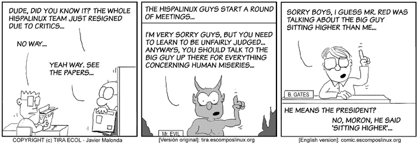
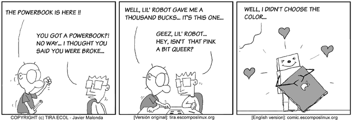
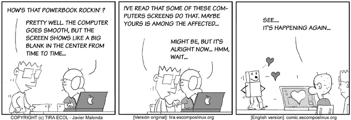
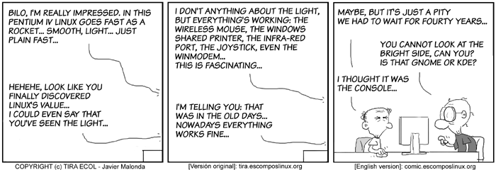
![[cartoon]](misc/ecol/ecol-153.png)
All Ecol cartoons are at
tira.escomposlinux.org (Spanish),
comic.escomposlinux.org (English)
and
http://tira.puntbarra.com/ (Catalan).
The Catalan version is translated by the people who run the site; only a few
episodes are currently available.
These cartoons are copyright Javier Malonda. They may be copied,
linked or distributed by any means. However, you may not distribute
modifications. If you link to a cartoon, please notify Javier, who would appreciate
hearing from you.
Copyright © 2004, Javier Malonda. Released under the
Open Publication license
unless otherwise noted in the body of the article. Linux Gazette is not
produced, sponsored, or endorsed by its prior host, SSC, Inc.
Published in Issue 101 of Linux Gazette, April 2004
Qubism
By Jon "Sir Flakey" Harsem
These images are scaled down to minimize horizontal scrolling.
To see a panel in all its clarity, click on it.
![[cartoon]](misc/qubism/qb-antim101.jpg)
All Qubism cartoons are
here
at the CORE web site.
Jon is the creator of the Qubism cartoon strip and current
Editor-in-Chief of the
CORE News Site.
Somewhere along the early stages of
his life he picked up a pencil and started drawing on the wallpaper. Now
his cartoons appear 5 days a week on-line, go figure. He confesses to
owning a Mac but swears it is for "personal use".
Copyright © 2004, Jon "Sir Flakey" Harsem. Released under the
Open Publication license
unless otherwise noted in the body of the article. Linux Gazette is not
produced, sponsored, or endorsed by its prior host, SSC, Inc.
Published in Issue 101 of Linux Gazette, April 2004
The Foolish Things We Do With Our Computers
By Ben Okopnik
Whack-A-Rack, or Impact-Based PC Repair
from Thomas Adam
[ ** This was posted to my LUG. I have obtained permission from Isaac, who
said we can publish this for next month's edition of LG. ** ]
--- ISAAC CLOSE wrote:
--- Thomas Adam wrote:
> --- Paul Tansom wrote:
>
> > Strangely enough I think that is all I remember of my assembly
> > programming on either 68000 or Z80 processors, although I still have
> > my faithful Z80 programming reference book somewhere. Were computers
> > really more fun back then or am I just jaded now?!
>
> Nope, it is all good fun. I have a unit at the moment, which is
> assembly programming on the 68HC05 (a motorola chip), although most of
> my assembly programming I learnt from my BBC Micro.
the ol' 6502 - 2MHz ?
cant remember nothing else tho ;)
funny...
A possibly well known trick to bring an hdd back to
life, is to smack it on the side with a soft hammer.
not too hard, but a whack indeed and presto.
born again.
One time, I dropped a 14" Samsung monitor face down -
smack onto a concrete step and watched helplessly as it
rolled down a further twenty or so, in the pouring rain.
No problem, took it home, let it dry out a couple of
days, works fine - still gottit, but a bit 'chipped' on
the screen!
and...
My development server was found lid off in horrendous
rain, (old ibm p166), I payed five quid for it.
(i166MMX/64MBRAM/2.5GBHDD/100MB/s-LAN)
Took it home, two days later switch on - fine !
even put a 40GB drive in it. Bios thort it was 8.5GB
(the old limit) but nope all 39GB useable.
Then one day, I overclocked it, and it died!
but came back to life strangley about a day or so
later, I did nothing to it, just tried the power
switch and it returned to life ?
Then, another day, I set it up on the floor, dead.
put it on a table, fine. back on the floor, dead,
table, fine - wtf.
Then, sold it to a woman in Lewisham SE London,
she phoned me about a week later saying it bust.
So I went up their with spare bits. This damn computer
would not accept any hdd or cable! just ignored them
all. So, I took it back home. Plugged it in.
Guess what...
It is now sitting in my cupboard, last reboot 10 days
ago. Longest uptime (before I had to swap some plugs)
was over four months.
And the only computer I ever heard of that suffered from
the millenium bug was mine! (seen a few since) when I
booted my 30 day trial paint shop pro had expired by
about 32000 days, but worked fine for six months.
I could go on and on, but maybe another time.
Isaac
Rootless Wanderer Saved By SSH
from Heather Stern
Once upon a time I was logged into a system. I wasn't too careful about
the terminal type setting - and I certainly wasn't careful enough -
let's just say the setting was a little iffy, going from this nice
FreeBSD box to my remote Solaris account. I didn't let this faze me
since I know vi even in primitive keys mode without cursors, and I just
needed something edited rather quickly.
As root. Whoops.
The passwd file, to fix a path. Carefully, carefully. Not carefully
enough to avoid bumping into an extended key code just before the magic
of ZZ took effect and saved the file...
...with the username root changed to the case
sensitive and utterly different name Root from what shows
in shadow, and guess who can't log in now. To put an even finer point on
it, Solaris of that particular vintage has a few system functions that want
to be the user root except - can you guess? Bet you
can... by name, not by number. No such user. Bad things start happening
like that great Garfield cartoon where all the things are going kerplooey
and he races to the kitchen to see that all the warranties have expired.
Luckily having been logged in only moments ago I know what the problem
is. Unluckily I know it will require root ... err... user 0 type
access. Can I do it? ssh ... long pause ... authenticates me, and I am
in. Hooray. THe normal authentication mechanism was one of the dying
breed but ssh ignored it as I passed muster with my key. With sudo I
raced to repair the damaged character and the day was saved.
I'll always be a fan of ssh and sudo. No doubt at all.
A Nice Clean Computer
from Tom Brown
A while back, I had the case off an old 486 "pizza-box" computer:
removing something or adding something, I don't remember what. Anyway,
while my back was turned, my son (who was 5 years old at the time) had come
into the room. He was looking into the guts of the computer when his hand
slipped on the glass of water he was holding, and the entire contents
spilled into the machine. Only the fact that the computer was off, and the
power cord pulled, saved us both from what would have been a dramatic light
show.
Recognizing the better part of valor, my son vanished from the room,
taking his now-empty glass with him.
The first thing I did was carry the computer to the nearest sink, and
pour the water out of it. There was quite a lot, as the glass had been
nearly full. From there, I disassembled every last part of the machine, and
spent the rest of the afternoon applying my wife's hair drier on the soaked
motherboard, memory, and assorted IDE cards. Lucky it was water, and not
something like juice or soda! Surprisingly enough, when everything was dry,
and reassembled, the computer worked, although, periodically, the machine
would refuse to boot, and I had to push and pull on the components a bit,
flexing the motherboard until it booted. Guess I missed a spot.
As for my son, he never again went near a computer with a drink in his
hand.
[ If you have a story about something foolish or ingenious you did to
your computer, send it to articles@lists.linuxgazette.net. -Ben ]
 Ben is the Editor-in-Chief for Linux Gazette and a member of The Answer Gang.
Ben is the Editor-in-Chief for Linux Gazette and a member of The Answer Gang.
Ben was born in Moscow, Russia in 1962. He became interested in electricity
at the tender age of six, promptly demonstrated it by sticking a fork into
a socket and starting a fire, and has been falling down technological
mineshafts ever since. He has been working with computers since the Elder
Days, when they had to be built by soldering parts onto printed circuit
boards and programs had to fit into 4k of memory. He would gladly pay good
money to any psychologist who can cure him of the recurrent nightmares.
His subsequent experiences include creating software in nearly a dozen
languages, network and database maintenance during the approach of a
hurricane, and writing articles for publications ranging from sailing
magazines to technological journals. After a seven-year Atlantic/Caribbean
cruise under sail and passages up and down the East coast of the US, he is
currently anchored in St. Augustine, Florida. He works as a technical
instructor for Sun Microsystems and a private Open Source consultant/Web
developer. His current set of hobbies includes flying, yoga, martial arts,
motorcycles, writing, and Roman history; his Palm Pilot is crammed full of
alarms, many of which contain exclamation points.
He has been working with Linux since 1997, and credits it with his complete
loss of interest in waging nuclear warfare on parts of the Pacific Northwest.
Copyright © 2004, Ben Okopnik. Released under the
Open Publication license
unless otherwise noted in the body of the article. Linux Gazette is not
produced, sponsored, or endorsed by its prior host, SSC, Inc.
Published in Issue 101 of Linux Gazette, April 2004
Home Folder Server For Windows Clients
By Avinoam Levkovich
One of the strategies to protect the data on user's personal computer is
using a Home-Folders Server. This server contains folders for each user
where the user can save his precious data, the server is backed up every
night. At login, the Home-Folders Share (which contains your home folder)
is mounted on the local machine, and the user can access it like any other
local drive.
Home-Folders Server has a big overhead for the IT staff. Managing the
ownership, shares, quota, permissions, and the never ending changes isn't
one of the most pleasant tasks for any Sys-Admin.
The story begins when my organization old Home-Folders Server started
showing signs of retirement wishes, we decided that it is time to build a new
Home-Folders server. We started looking for a solution that will take the
management overhead from the IT stuff, since our budget was low we wanted
cheap but reliable system. Naturally, we started thinking about building a
Linux server. We wanted this system to perform the following tasks:
- This system will be integrated into the organization's existing Win-2K
active directory infrastructure.
-
The system should function automatically. When we add a new user to the
domain, the system will automatically create his home folder, grant the
appropriate permissions and configure the user's quota.
-
We will map the home-folder by using login scripts (KIX).
- The System will monitor the Server RAID-System, when the RAID is out of
sync (damaged disk, Bad Controller, etc.) the script send a warning e-mail
to the IT staff.
Since our budget was low, we decided to save money and still get good
performance by using a new desktop PC (P4 1.6GHZ, 1GB RAM). To make the
system reliable we decided to use four HDs (IDE, 120GB each) configured as
RAID-5, for the Home-Folders partition. All other system partitions will use
two HD (IDE, 12GB each) with RAID-1 (mirror). To get the extra IDE
controllers I used PROMISE 133TX2, IDE Card (PCI), which works great with
RedHat.
The Home-Folder System Installation and Configuration
After installing Linux (we used Redhat) and configuring the RAID system,
take the following steps to finish the configuration of the Home-Folders
Server:
- Install and configure the Samba server, share the Home-Folders partition
with read/write permission (we will limit the access to the users' folders
by using the system permissions.)
- Configure Winbind. Winbind is part of the Samba package which makes
the integration to the windows domain easy.
By using Winbind, Windows Users can access the Linux server using their
logon credentials. Winbind verifies the user with the domain controller like
any other Windows server. You can find more info on Winbind installation in
this article : http://us2.samba.org/samba/docs/man/winbindd.8.html
After installing Winbind, check its functionality by running the command:
# getent passwd
The output should be the list of users in the domain. If you do not receive
this output, check your Winbind configuration.
- Configure quota support for the Home-Folders partition. You can find
more info about quota configuration here:
http://www.tldp.org/HOWTO/Quota.html
Next, plan and decide how much space you wish to grant to each user, create a
template user and assign a quota equal to the amount of space you decided.
Later on we will use this user as a quota template.
Note: this step is optional and only required if you want to use the quota
system.
Home-Folders Creator Script
The following script is the heart of the system, the script retrieves the
domain users list from the domain controller server into a file and removes
all the unneeded data from the list. At this stage the system verifies that
each user in this list owns a home-folder. If the user already has a
home-folder the system write the char "." to the stdout and moves on, if
the user is a new user and he still doesn't have a home-folder, the system
will create a folder (the folder name will be the same as the username),
grant ownership to the user, and apply the quota for this folder by copying
the quota from the template quota user to this new user.
The system will log the new users home-folder creation to the system log file
(/var/log/messages).
The Home-Folders creator script can be found here.
You need to change the following parameters to reflect your server configuration:
HOME_FOLDERS_PATH - Assign the path to the Home-Folders
Directory/Partition, it is essential to put the character "/" at the end of
the path (e.g. /home/).
SEPERATOR - Assign the Winbind separator as it configured in the smb.conf
file.
TEMP_USER - (OPTIONAL) if you want to use quota, you should uncomment this
variable and Assign the username you created to act as a quota template. if
so please remember to uncomment the line "edquota -p $TEMP_USER $DOMAIN$SEPERATOR$Folder_Name"
The RAID system watchdog script
The following script creates an endless loop that check the RAID system
every 5 minutes, if the RAID is out of sync (damaged disk, Bad Controller
etc..) the script will send an e-mail to a predefine mail address ( change
the MAIL variable to reflect your mail address).
you can use this script as an independent RAID WatchDog for your other
RAID-Systems.
In order to start this script automatically after reboot, you can add the
path to the script to your rc.local file.
The script can be found here.
Make the system function automatically
To automate the system you should execute the Home-Folders creator script
as root at predefined intervals. By adding the following line to the root's cron
jobs (using "crontab -e"), the Home-Folders script will execute every hour.
(Change the script path to match your configuration.)
*/59 * * * * /etc/Home-Folders-creator.sh
Mapping the Home-Folder to the users during the logon process
By using a simple logon scripts system (I use KIX) you can map the Home-Folder Samba
share during the user login process.
Avinoam Levkovich is an RHCE in Israel, currently working
as the Linux Sys-Admin at the Rambam Medical Center.
Copyright © 2004, Avinoam Levkovich. Released under the
Open Publication license
unless otherwise noted in the body of the article. Linux Gazette is not
produced, sponsored, or endorsed by its prior host, SSC, Inc.
Published in Issue 101 of Linux Gazette, April 2004
Simple Joystick control of a servo motor with RTAI/Linux
By Pramode C.E.
The analog joystick which plugs onto the PC game port
is a cool little device - you don't need to be a hardware
wizard to learn how it works, and you can make it do
fun and absolutely useless stuff like turn a stepper or
servo motor. This article describes an experiment which
I did with a joystick and a Futaba S2003 servo motor, both
controlled by the real time operating environment for
Linux called RTAI. Readers who
are not familiar with RTAI might like to refer to the
introductory article I had
written earlier before continuing.
The Joystick
If you are game-crazy, you are sure to have used
one. As far as electronics is concerned, it is a very
primitive device - so is the game port which it
plugs into. You will find adequate hardware
descriptions here. The
Linux IO-Port Programming Mini-HOWTO also provides
sufficient information to get started with hacking the joystick.
Reading the buttons
Your first joystick programming assignment should
be reading the state of the buttons. For this, you
have to know the ISA port address which the gameport
uses. Loading the standard Linux joystick driver
(you will have to modprobe three modules - joydev,
ns558 and analog) and doing `cat /dev/ioports' on
my ASUS A7N266VM motherboard showed this to be 0x200.
The state of two of my joystick buttons is encoded
in bits D4 and D5 of the 8 bit value returned by
an `inb' on 0x200 (D0 is least significant bit and D7
is most significant bit). If the value is 1, the
button is in the `released' state and if it is 0, the
button is in the `pressed' state. Here is a small
program which tests this out:
Listing 1
#include <asm/io.h>
#define JS_PORT 0x200
main()
{
iopl(3);
while(1)
printf("%x\n", (inb(JS_PORT) >> 4)&1);
}
Reading the X and Y positions
Moving the joystick results in a potentiometer
turning - the potentiometer is connected to the game port,
which contains a 555 timer based circuit. A simple
`outb' to 0x200 (the value written doesn't matter)
will result in the circuit getting `reset' - now
a read (ie, an `inb') from 0x200 will yield a bit
pattern whose D0 and D1 bits are 1's. Keep on reading
- after a short time these bits become zero. Measure
the time it takes for the bits to become zero. Take
the measurements with the joystick at the extreme left,
middle and extreme right endpoints of the X axis as
well as the top, middle and bottom points of the Y axis
as part of a `calibration' process. Now, whatever be
the position of the joystick along the X-Y axes,
measuring the time it takes
for the D0 (X axis) and D1 (Y axis) bits to become zero's after a
`reset' (note, we `reset' by writing something to 0x200)
should help us find it out (assuming that time varies linearly
with distance between the middle and left/top as well as middle and
right/bottom endpoints - which I really haven't verified).
Here is a program which measures the time it takes for the X-axis
bit to become zero after a reset. It uses the `time stamp counter'
which is a 64 bit counter available on all machines with, I believe,
a Pentium and above CPU. If you have a 1GHz CPU, the timer gets
incremented at a rate of 1,000,000,000 per second. My Athlon XP CPU
runs at a clock speed of 1462.904 MHz (read from /proc/cpuinfo) -
with this information, it is easy to compute the time elapsed
between any two points in your program. The time stamp counter
(TSC) can be read using a macro called `rdtsc' defined in the
file /usr/src/linux/include/asm/msr.h.
Listing 2
#include <asm/io.h>
#include <asm/msr.h>
#define JS_PORT 0x200
#define CPU_HZ 1462904000
void trigger(void)
{
outb(0x0, JS_PORT);
}
main()
{
unsigned int low1, high1, low2, high2;
iopl(3);
trigger();
rdtsc(low1, high1);
while(inb(JS_PORT) & 1);
rdtsc(low2, high2);
printf("low1=%u, high1=%u, low2=%u, high2=%u\n", low1, high1, low2, high2);
printf("low2 - low1 = %u\n", low2 - low1);
printf("in ms = %f\n", (((double)(low2-low1))/CPU_HZ)*1000);
}
The program should be compiled like this:
cc -I/usr/src/linux/include -O2 xmeasure.c
I got readings of 0.0262ms, 0.68ms and 1.60ms for the
left, middle and right positions.
One trouble with this crude form of analog-to-digital
conversion is that you have to sit in a loop waiting for the
bits to drop to zero - this burns up CPU cycles. A better
design would have been for the joystick hardware itself to perform
the A-D conversion and send the resulting numbers to the PC - thus
avoiding lots of software overhead.
Using a periodic RTAI task to sense joystick position
My experiment is this: I have a servo motor connected to the parallel
port. The servo is not capable of rotating the full 360 degrees - it
describes an arc of about 180 degrees. When I turn the joystick left, the
servo also moves to the left end of the arc. When the joystick is in the
`middle' position, the servo positions itself near the centre of the 180
degree arc and when the joystick moves towards the right end, the servo
also moves towards the right end of the arc. Note that I try to sense only
three joystick positions - left, middle and right.

The picture above shows two servo motors - the one at the bottom serving to
rotate the platform resting on it - it is this servo which I will be moving
with the joystick.
The idea is simple. A periodic task (period .33 milliseconds) monitors
the joystick. At the first activation of this task (lets say at time 0), we
`trigger' the game port (by writing to it) and assume that joystick position
is `LEFT'. The next activation of the task would be at 0.33 milliseconds. If
reading from the game port tells us that the X axis bit (D0) is still set, we
assume that the joystick is in the `MIDDLE' position. The next activation of
the task would be at 0.66 milliseconds - but we are not interested in checking
the X axis bit at this point - we will take it that the joystick is in the
`MIDDLE' position if the bit stays high for a period between 0.33 and 0.99
milliseconds (note that the `bit-high' times obtained experimentally were
0.026, 0.68 and 1.60 milliseconds respectively for extreme left, middle and
extreme right positions). The next activation would be at 0.99 milliseconds -
if bit D0 still stays high, we assume that the joystick is in the `RIGHT'
position. Only at this point are we sure of the actual position of the
joystick - we shall set a global variable, `joystick_position' to LEFT,
RIGHT or MIDDLE.
Now we come to the
servo motor control part - which is
fairly simple.
A hobby servo motor requires a `control pulse' on its white wire. The
total on-off time of the pulse should be around 20 milliseconds - it
is the 'on' time which actually controls the servo's position. My servo
moves to one end of a 180 degree arc for an 'on' time of about 0.5 millisecond
and moves to the other end for an 'on' time of about 2.2 seconds. A separate
RTAI task controls the generation of this signal. A global array called
`on_time' maintains the three 'on'-time values which would move the servo
to the left, middle and right points of its arc. The servo task makes
pin 3 of the parallel port (to which the servo's control wire is connected)
high for a period of on_time[LEFT] if the current joystick position is
`LEFT' - similarly for MIDDLE and RIGHT also. The 'off' time of the control
pulse is stored in a variable `off_time' and is computed in such a way that
the total 'on' plus 'off' time is around 20 milliseconds.
[Listing 3]
static void
pwm_servo(int t)
{
/* Servo is controlled by
* signal on pin 3 of LPT1
*/
while(1) {
outb(2, LPT1_BASE); /* Pin 3 high */
rt_sleep(on_time[joystick_position]);
outb(~2, LPT1_BASE);
rt_sleep(off_time);
}
}
Conclusion
It has been fun playing with the joystick. I would like to know
if there is a good method to monitor the joystick position continuously
without loading RTAI too much (by increasing the timer frequency
or resorting to busy loops) - let me know if you come across anything
interesting. I can be contacted via my home page at
pramode.net.
I am an instructor working for IC Software in Kerala, India. I would have loved
becoming an organic chemist, but I do the second best thing possible, which is
play with Linux and teach programming!
Copyright © 2004, Pramode C.E.. Released under the
Open Publication license
unless otherwise noted in the body of the article. Linux Gazette is not
produced, sponsored, or endorsed by its prior host, SSC, Inc.
Published in Issue 101 of Linux Gazette, April 2004
Designing Simple front ends with dialog/Xdialog
By Sunil Thomas Thonikuzhiyil
1) Introduction
This article introduces dialog and Xdialog for building simple front ends to shell scripts. It assumes that you are familiar with shell programming.
The latest version of this document can be found at
http://gnubox.dyndns.org:8080/~sunil/dialog.php.
dialog is a utility for building console-based front ends. Xdialog is a similar program for X. Both programs are more or less compatible and easy to program. Dialog is shipped with most GNU/Linux distributions. If you want to build from sources, a tarball can be obtained from here. Xdialog is available from here.
Both of these programs are free software and run on a variety of *nix platforms. Most of the examples given in this tutorial are adapted from examples given along with dialog sources.
2) Basics
Here is the first dialog script I tried. It displays a simple YES/NO box.
#!/bin/bash
DIALOG=${DIALOG=dialog}
$DIALOG --title " My first dialog" --clear \
--yesno "Hello , this is my first dialog program" 10 30
case $? in
0)
echo "Yes chosen.";;
1)
echo "No chosen.";;
255)
echo "ESC pressed.";;
esac
Copy the above lines to a file say yesno.sh and give executable permission to it.
$chmod u+x yesno.sh
Now try running the program.
$./yesno.sh
A screen-shot of the above program is given below.
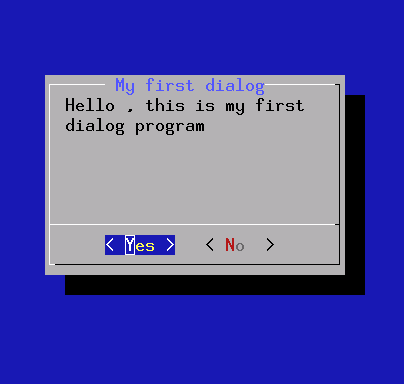
Now try changing the line.
DIALOG=${DIALOG=dialog}
to
DIALOG=${DIALOG=Xdialog}
Try running it from an xterm. I got the following output.

Let us have a detailed look at the above program. The first line is basically a comment which also indicates that bash shell is used to run this program.
DIALOG=${DIALOG=dialog}
The above line sets the variable DIALOG to the value 'dialog'. The actual dialog box is drawn by the following line.
$DIALOG --title "My first dialog" --clear \
--yesno "Hello, this is my first dialog program" 10 30
Options used are
--title This option sets title of your box
--clear This option clears the screen before drawing
--yesnobox This draws the box with the text given inside the box.
The text to be printed inside yesnobox is given in double quotes. The text wraps depending on width of the box. You can use \n to force a new line. Last 2 numbers specify width and height of the box. You can move between "yes" and "no" using tabs.
The dialog program now waits for user input. When you press enter on "yes" or "no" or if you press escape key the program returns and the return value is available on shell variable $? which you can process further.
2) Reading input
The following program reads a string you input and prints it back.
#!/bin/sh
DIALOG=${DIALOG=dialog}
tempfile=`tempfile 2>/dev/null` || tempfile=/tmp/test$$
trap "rm -f $tempfile" 0 1 2 5 15
$DIALOG --title "My input box" --clear \
--inputbox "Hi, this is a sample input box\n
Try entering your name below:" 16 51 2> $tempfile
retval=$?
case $retval in
0)
echo "Input string is `cat $tempfile`";;
1)
echo "Cancel pressed.";;
255)
if test -s $tempfile ; then
cat $tempfile
else
echo "ESC pressed."
fi
;;
esac
Try running the program under console and under X ( after changing dialog to Xdialog as above). See the results.
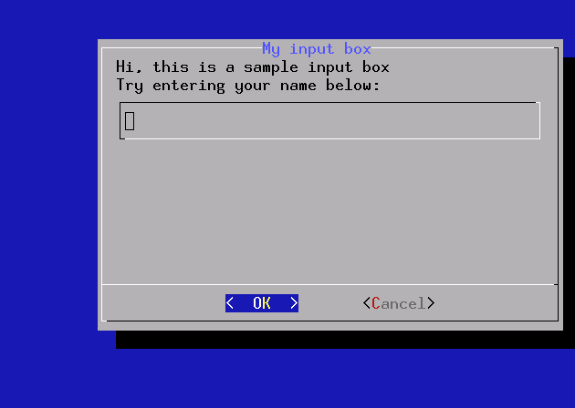
This program is slightly more complex than our previous yesno box program. The following lines set up a temporary file:
tempfile=`tempfile 2>/dev/null` || tempfile=/tmp/test$$
trap "rm -f $tempfile" 0 1 2 5 15
The first line above tries to create a temporary file using the utility tempfile. If it fails, a temporary file is manually set up in /tmp. The second line above sets up a trap routine. When the script exits (either normally or abnormally) the trap removes the tempfile. The numbers shown are the signals that will be trapped.
dialog is then invoked as below:
$DIALOG --title "My input box" --clear \
--inputbox "Hi, this is a sample input box\n
Try entering your name below:" 16 51 2> $tempfile
The dialog program writes its output to the standard error by default. Hence the input string you enter is echoed to standard error which we are redirecting to our tempfile. You can capture the entered text from tempfile for further processing.
3) Building a menu
Try the following program both in console and X (after changing dialog to Xdialog as before):
#!/bin/sh
DIALOG=${DIALOG=dialog}
tempfile=`tempfile 2>/dev/null` || tempfile=/tmp/test$$
trap "rm -f $tempfile" 0 1 2 5 15
$DIALOG --clear --title "My favorite HINDI singer" \
--menu "Hi, Choose your favorite HINDI singer:" 20 51 4 \
"Rafi" "Mohammed Rafi" \
"Mukesh" "Mukesh" \
"Kishore" "Kishore Kumar" \
"Saigal" "K L Saigal" \
"Lata" "Lata Mangeshkar" \
"Yesudas" "K J Yesudas" 2> $tempfile
retval=$?
choice=`cat $tempfile`
case $retval in
0)
echo "'$choice' is your favorite hindi singer";;
1)
echo "Cancel pressed.";;
255)
echo "ESC pressed.";;
esac
The results are as below
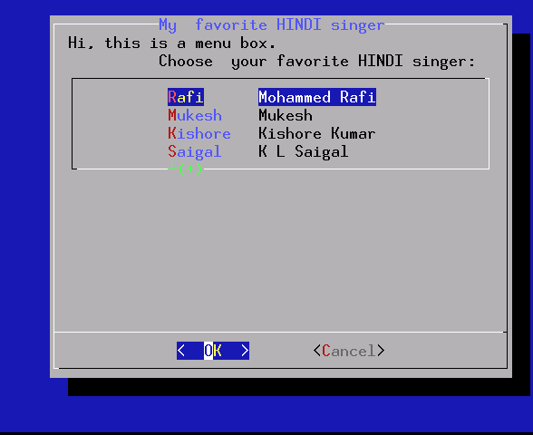
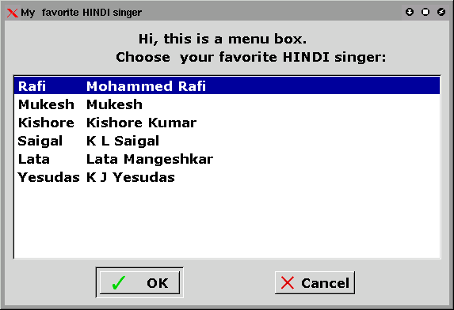
The logic is exactly similar to inputbox. We redirect the choice you have selected to a tempfile and then process return value of dialog and contents of the tempfile.
4) Radiolist and Checklist
Radiolists and checklists can be programmed just like menus. A simple radio list example is given below.
#! /bin/sh
DIALOG=${DIALOG=dialog}
tempfile=`tempfile 2>/dev/null` || tempfile=/tmp/test$$
trap "rm -f $tempfile" 0 1 2 5 15
$DIALOG --backtitle "Select your favorite singer" \
--title "My favorite singer" --clear \
--radiolist "Hi, you can select your favorite singer here " 20 61 5 \
"Rafi" "Mohammed Rafi" off \
"Lata" "Lata Mangeshkar" ON \
"Hemant" "Hemant Kumar" off \
"Dey" "MannaDey" off \
"Kishore" "Kishore Kumar" off \
"Yesudas" "K. J. Yesudas" off 2> $tempfile
retval=$?
choice=`cat $tempfile`
case $retval in
0)
echo "'$choice' is your favorite singer";;
1)
echo "Cancel pressed.";;
255)
echo "ESC pressed.";;
esac
A screen shot is shown below.
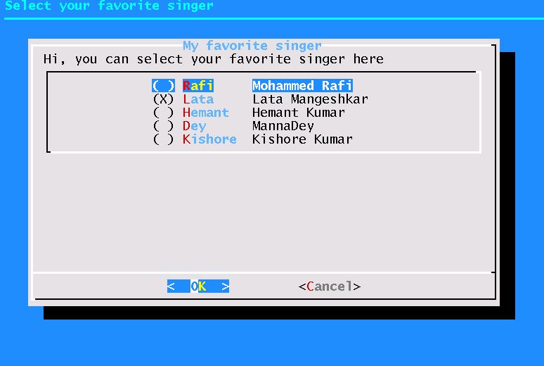
For trying out checklist just change --radiolist option in the above program to --checklist.
5) Building a Gauge
A gauge based on dialog can be used to indicate progress of your program. Building a gauge is slightly tricky. Look at the following example:
#!/bin/sh
DIALOG=${DIALOG=dialog}
COUNT=10
(
while test $COUNT != 110
do
echo $COUNT
echo "XXX"
echo "The new\n\message ($COUNT percent)"
echo "XXX"
COUNT=`expr $COUNT + 10`
sleep 1
done
) |
$DIALOG --title "My Gauge" --gauge "Hi, this is a gauge widget" 20 70 0
Here the dialog program gets its input from the code shown within the parentheses. This code emits the number to be used for gauge and the message to be shown. The message to be shown in the gauge box must be surrounded by echo "XXX". The screen-shot of a gauge is shown below.
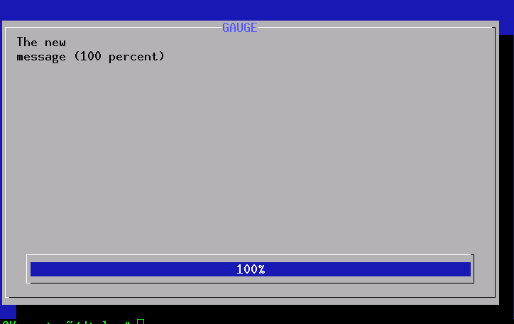
6) File selections
Code for a typical file selection dialog box is shown below.
#!/bin/sh
DIALOG=${DIALOG=dialog}
FILE=`$DIALOG --stdout --title "Please choose a file" --fselect $HOME/ 14 48`
case $? in
0)
echo "\"$FILE\" chosen";;
1)
echo "Cancel pressed.";;
255)
echo "Box closed.";;
esac
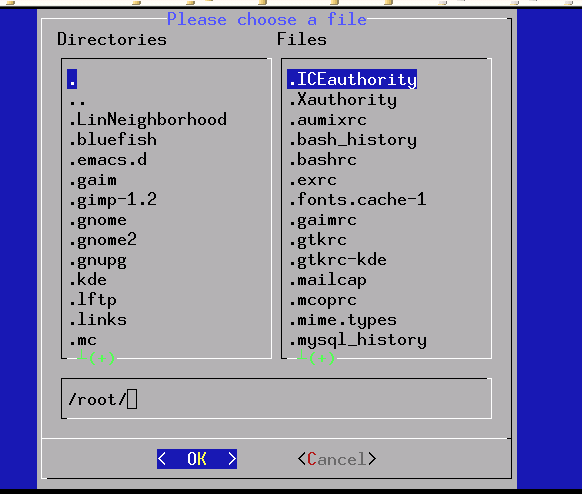
Please note that the above program uses a different technique to capture the selected file. As mentioned previously all outputs from dialog is sent to standard error by default. However --stdout option can be used to send the output information to standard output which in turn can be assigned to a variable. This trick can be used in the case of other dialog boxes such as menubox yesnobox etc.
The file selection dialog presents 2 panes. You can use Tab key to switch between panes and space key to select a file. It is also possible to type into the input box of files select dialog.
7) Calendar and time boxes
a) Calendar
A calendar box displays month, day and year in separately adjustable windows. If the values for day, month or year are missing or negative, the current date's corresponding values are used. You can increment or decrement any of those using the left-, up-, right- and down-arrows. Use vi-style h, j, k and l for moving around the array of days in a month. Use tab or back tab to move between windows. If the year is given as zero, the current date is used as an initial value. On exit, the date is printed in the form day/month/year.
#!/bin/sh
DIALOG=${DIALOG=dialog}
USERDATE=`$DIALOG --stdout --title "CALENDAR" --calendar "Please choose a date..." 0 0 7 7 1981`
case $? in
0)
echo "Date entered: $USERDATE.";;
1)
echo "Cancel pressed.";;
255)
echo "Box closed.";;
esac
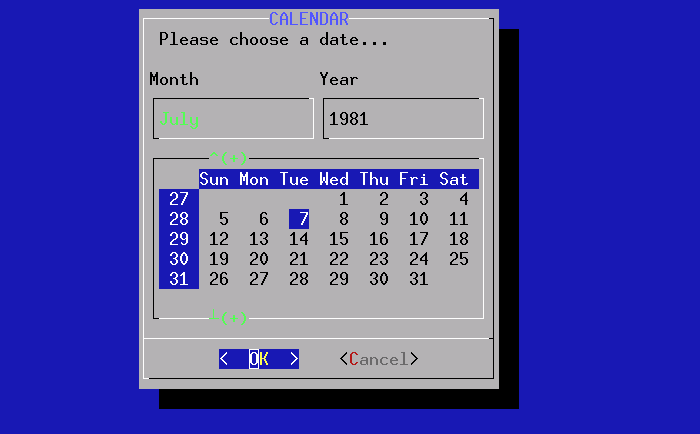
b) Time
The time dialog box allows you to select time. Try out the following program and see how it works.
#!/bin/sh
DIALOG=${DIALOG=dialog}
USERTIME=`$DIALOG --stdout --title "TIMEBOX" --timebox "Please set the time..." 0 0 12 34 56`
case $? in
0)
echo "Time entered: $USERTIME.";;
1)
echo "Cancel pressed.";;
255)
echo "Box closed.";;
esac
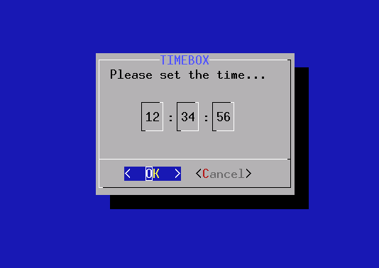
8) Other Features
Xdialog has some additional features such as tree-view, range-box, edit-box, etc. Please look here. Dialog man page has interesting information of some other options such as password box, tailbox etc. Also there are options for changing colors, shadow etc.
9) Tips
You can choose between dialog and Xdialog at run time using the following code snippet:
if [ -z $DISPLAY ]
then
DIALOG=dialog
else
DIALOG=Xdialog
fi
Try this program on console as well as under X and see the difference.
#!/bin/sh
if [ -z $DISPLAY ]
then
DIALOG=dialog
else
DIALOG=Xdialog
fi
$DIALOG --yesno "Is this fun" 0 0
10) References
1) Manual page for dialog
It is a must read if you are planning to write some useful dialog scripts. There are several other options which allow you to modify the look and feel.
2) Dialog examples at http://www.fifi.org/doc/dialog/examples/.
All the examples in this tutorial are modified versions of examples found here. If you have Debian GNU/Linux the examples are available at /usr/share/doc/dialog/examples.
3) Thomas Dickey's dialog page: http://dickey.his.com/dialog/
4) Vincent Stemen's dialog page http://hightek.org/dialog/.
This page has comprehensive information on various dialog versions.
5) Xdialog documentation at http://thgodef.nerim.net/xdialog/doc/index.html.
This page has exhaustive information on Xdialog.
I work as consultant information technology at the Kerala Legislative
Assembly Trivandrum India. I have been hooked on Linux since 1996. I have a
Masters in Computer Science from Cochin University. I am interested in all
sorts of operating systems. In my free time I love to listen to Indian
classical music.
Copyright © 2004, Sunil Thomas Thonikuzhiyil. Released under the
Open Publication license
unless otherwise noted in the body of the article. Linux Gazette is not
produced, sponsored, or endorsed by its prior host, SSC, Inc.
Published in Issue 101 of Linux Gazette, April 2004
The Back Page
By Ben Okopnik
This month, our Editor-in-Chief, Mike Orr, is away at some conference where
he is wrestling pythons. Or some Python conference followed by wrestling...
he sounded a bit strangled on the phone, so it was a little difficult to
tell - but whatever it is, it involves his hobbies. While he's gone, I've
volunteered to do the Editor-in-Chief's duties, including publishing - and
as you can imagine, I had hoped that this month would pass quietly and
everything would roll out on schedule.
Say, does anyone else hear that hollow laugh?...
Our Answer Gal, Heather Stern, who is responsible for a large chunk of
the LG production process, had a series of hardware problems that grew like
Topsy to encompass not only her entire system but eventually involved her
ISP and the name registrar (!). I mean, really, sans peur et sans
reproche is one thing, but sans email at production
time???... believe it or not, she still managed to get her
work done as well as contribute some material for our regular columns,
although, of course, it was all unavoidably delayed. So life goes, gentle
readers. You have my apologies for LG being a bit late this month - we
usually try to publish within a few days of the 1st.
While I have the chance to ramble - this month, I celebrated my
birthday, one I share with Sergei Rachmaninoff, Abraham Maslow, Otto von
Bismark, William Harvey, and, uh, "Method Man". April 1st, the day that the
internal combustion engine was patented and that color television was first
sold (and also the day the yo-yo was introduced to the American public), is
"celebrated" world-wide as "April Fools Day", the day when people pull
pranks and give gag gifts to each other - something I've been fortunate
enough, or perhaps large enough to avoid. As my Web page
says, "creative answers will be graded appropriately, with bastinado being
reserved for the wittiest and applause for the most charming. Note that a
combination of the two is hereby explicitly not excluded."
To make a long story short (for the hecklers in the back of the room
yelling "too late!", you just quiet down), I ended up going to dinner with
a client of mine who insisted that I should do something special for
myself, at a very nice local restaurant called "Fusion Point". (Chris is
also a good friend as well as being my yoga teacher.) While munching on
the gourmet fare, we got into a deep philosophical discussion (as we often
do), and I happened to mention Linux, which he had never heard of. Once I
described some of the dynamics of the community and the way it came about,
Chris looked at me and said: "You see, this is the exactly the kind of
progress in the direction of enlightenment that we've been talking about.
Despite the wars, the hatred, all the evils of the human condition, there
is an underlying and irresistible movement in that
direction - and it's cumulative." (This is a paraphrase because I don't
recall his exact words, but it's close.)
This is, indeed, the way that I see Linux. It goes beyond just the OS,
beyond the free tools; it is a way for many people whose abilities would
remain hidden and unused without that necessary leverage to become
empowered, a way for those whose lack of money has stifled their ability to
express their creativity to bring it out to the world. It's not a cure-all
for all the existing ills by any means - but it is certainly a step in the
right direction.
My best wishes and congratulations to all of you who are making your way
toward the light. I take great joy and pride in being able to contribute to
that progress, in whatever way I can.
Ben is the Editor-in-Chief for Linux Gazette and a member of The Answer Gang.
Ben was born in Moscow, Russia in 1962. He became interested in electricity
at the tender age of six, promptly demonstrated it by sticking a fork into
a socket and starting a fire, and has been falling down technological
mineshafts ever since. He has been working with computers since the Elder
Days, when they had to be built by soldering parts onto printed circuit
boards and programs had to fit into 4k of memory. He would gladly pay good
money to any psychologist who can cure him of the recurrent nightmares.
His subsequent experiences include creating software in nearly a dozen
languages, network and database maintenance during the approach of a
hurricane, and writing articles for publications ranging from sailing
magazines to technological journals. After a seven-year Atlantic/Caribbean
cruise under sail and passages up and down the East coast of the US, he is
currently anchored in St. Augustine, Florida. He works as a technical
instructor for Sun Microsystems and a private Open Source consultant/Web
developer. His current set of hobbies includes flying, yoga, martial arts,
motorcycles, writing, and Roman history; his Palm Pilot is crammed full of
alarms, many of which contain exclamation points.
He has been working with Linux since 1997, and credits it with his complete
loss of interest in waging nuclear warfare on parts of the Pacific Northwest.
Copyright © 2004, Ben Okopnik. Released under the
Open Publication license
unless otherwise noted in the body of the article. Linux Gazette is not
produced, sponsored, or endorsed by its prior host, SSC, Inc.
Published in Issue 101 of Linux Gazette, April 2004

{kind=link}
{kind=link}
{kind=link}
{kind=link}
{kind=link}
{kind=link}
{kind=link}